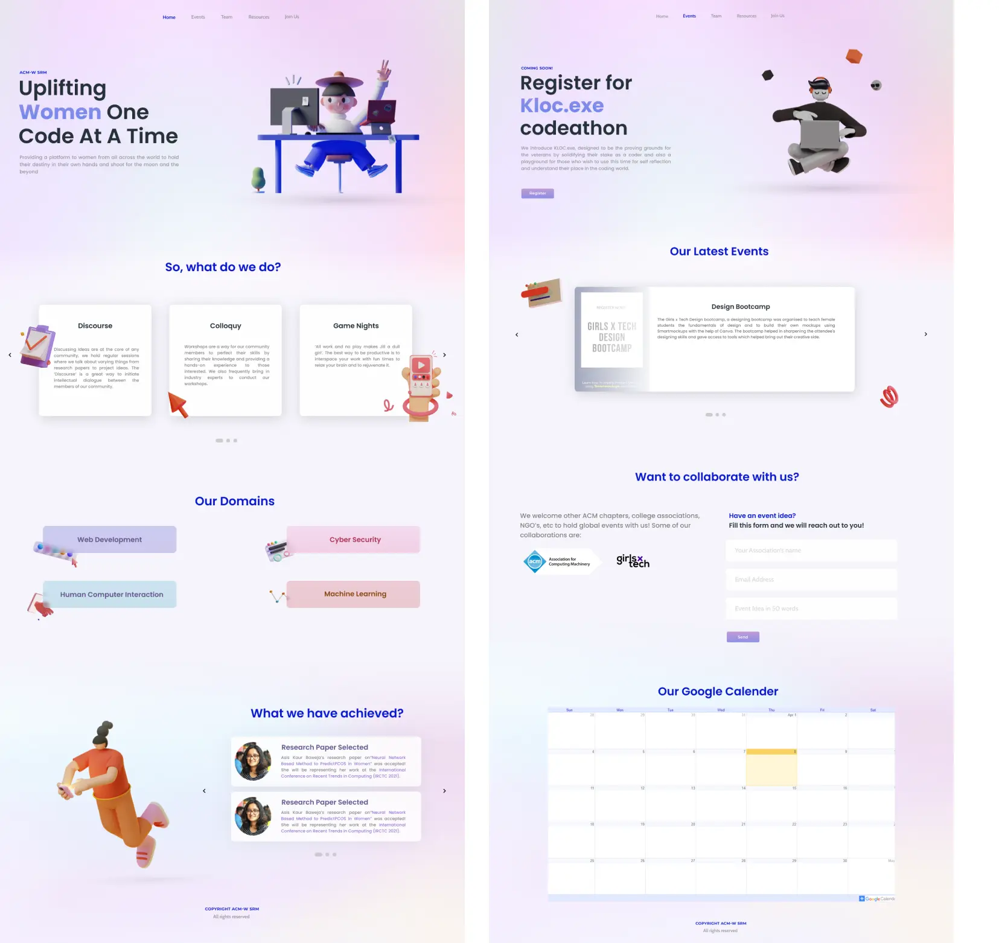

Revamping the ACM-W Website
Introduction
ACM-W SRM Chapter is a community of ACM focused on the upliftment of women across all the fields in Computing. The website is supposed to host complete information about our work as a community and the resources we use or create. The website was supposed to be comprehensive, providing the maximum amount on Information it could. The User Experience had to be simple and should provide all the information with the minimum amount of clicks from the user, and the information despite being comprehensive should be aesthetically pleasing to watch and browse through.
Why was a revamp required?
The old ACM-W website displayed bare minimum information about the activities, projects, blogs or events led by the chapter. The current community has above 40 members and the website consisted of only the 6 core members. Apart from that, most students or teachers were facing issues in communicating about recruitments as well as collaborations for events. Most of the information was not available at the website which made it difficult for our audience to understand our work. Thus, the team decided to redesign our website.
Before I started the research, our team did meetings to come up with basic goals of the website which can act as guidelines for the research and preparing forms for the survey.
User Research
I started out the project by interviewing teachers, students and team members of the community. After carefully constructing the survey, we find out that most people visiting the website would be students or associations who want to join us or collaborate with us on any event. However, keeping in mind our role as a community, the second category of users would be people trying to learn from the works or participate in workshops, hackathons and seminars we conduct.
Using the results of the survey, I created two personas that embody the traits of the target audience.
Personas
.webp)
Information Architecture
The first step of planning the structure of the website began with grouping all our research findings into features. After deciding on the basic features, I decided to have a call with the team members asking them to rate those features on a “How much we need this?” scale. This helped me to come up with the information architecture.
.webp)
Wireframing
After finalising on our architecture, I jumped straight to sketching some of my ideas. This exercise helped me to accumulate all the features into frames and add important CTAs, elements such as forms,cards etc. After using pen and paper, it was time to finally start off with Figma. Keeping in mind that our developers are also students who are trying to learn, I tried to come up with something easy to implement yet aesthetically pleasing
Testing
After showing the low-fidelity wireframes to the users, I was able to discover which area of designs needed improvements. Thus, based on the feedback, I came up with solutions to those issues.
.webp)
Final UI
.webp)